Ensemble 3: gravity spacings vs noise; medium-strength regional field¶
*with density estimation
This notebooks performs 100 synthetic inversions, with all combinations of 10 values of gravity flight line spacing, and 10 values of the gravity data noise. There is a medium-strength regional gravity field which is estimated with Constraint Point Minimization and removed prior to each inversion. For each inversion, we estimate the optimal density contrast value for the seafloor with a cross-validation of the constraint points.
import packages
[1]:
%load_ext autoreload
%autoreload 2
import itertools
import logging
import os
import pathlib
import pickle
import matplotlib.pyplot as plt
import numpy as np
import pandas as pd
import pygmt
import verde as vd
import xarray as xr
from invert4geom import inversion, optimization, plotting, utils
from invert4geom import synthetic as inv_synthetic
from polartoolkit import maps
from polartoolkit import utils as polar_utils
from tqdm.autonotebook import tqdm
import synthetic_bathymetry_inversion.plotting as synth_plotting
from synthetic_bathymetry_inversion import synthetic
os.environ["POLARTOOLKIT_HEMISPHERE"] = "south"
logging.getLogger().setLevel(logging.INFO)
/home/sungw937/miniforge3/envs/synthetic_bathymetry_inversion/lib/python3.12/site-packages/UQpy/__init__.py:6: UserWarning:
pkg_resources is deprecated as an API. See https://setuptools.pypa.io/en/latest/pkg_resources.html. The pkg_resources package is slated for removal as early as 2025-11-30. Refrain from using this package or pin to Setuptools<81.
[2]:
ensemble_path = "../results/Ross_Sea/ensembles/Ross_Sea_ensemble_03_grav_spacing_vs_noise_medium_regional_density_estimation"
ensemble_fname = f"{ensemble_path}.csv"
[3]:
# set grid parameters
spacing = 2e3
inversion_region = (-40e3, 110e3, -1600e3, -1400e3)
true_density_contrast = 1476
bathymetry, _, original_grav_df = synthetic.load_synthetic_model(
spacing=spacing,
inversion_region=inversion_region,
buffer=spacing * 10,
basement=True,
zref=0,
bathymetry_density_contrast=true_density_contrast,
)
buffer_region = polar_utils.get_grid_info(bathymetry)[1]
requested spacing (2000.0) is smaller than the original (5000.0).
requested spacing (2000.0) is smaller than the original (5000.0).
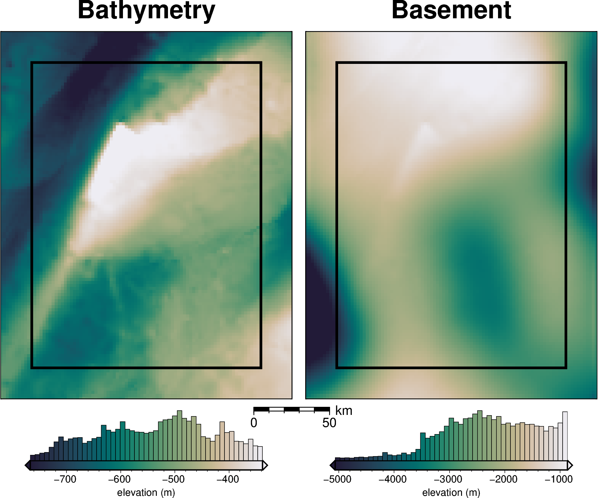
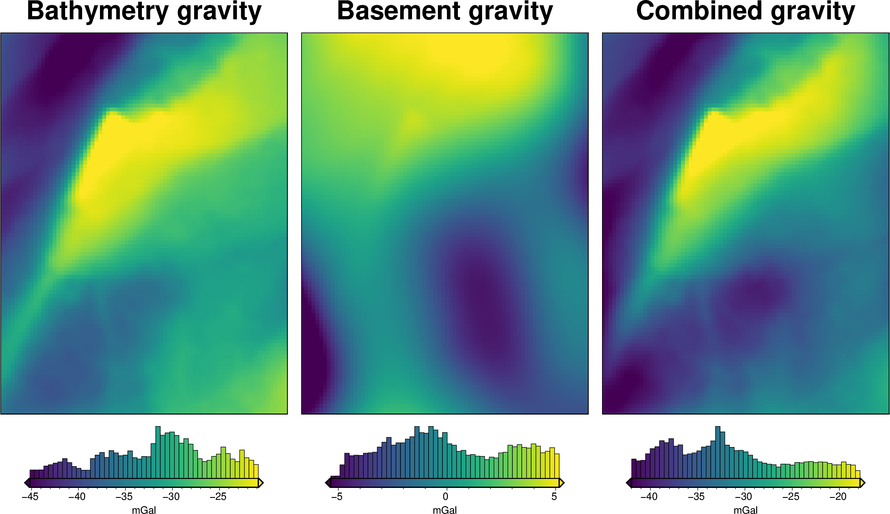
[4]:
bathymetry = bathymetry.sel(
easting=slice(inversion_region[0], inversion_region[1]),
northing=slice(inversion_region[2], inversion_region[3]),
)
[5]:
# normalize regional gravity between -1 and 1
original_grav_df["basement_grav_normalized"] = (
vd.grid_to_table(
utils.normalize_xarray(
original_grav_df.set_index(["northing", "easting"])
.to_xarray()
.basement_grav,
low=-1,
high=1,
)
)
.reset_index()
.basement_grav
)
original_grav_df = original_grav_df.drop(
columns=["basement_grav", "disturbance", "gravity_anomaly"]
)
original_grav_df
[5]:
| northing | easting | upward | bathymetry_grav | basement_grav_normalized | |
|---|---|---|---|---|---|
| 0 | -1600000.0 | -40000.0 | 1000.0 | -35.551085 | -0.575645 |
| 1 | -1600000.0 | -38000.0 | 1000.0 | -36.054683 | -0.523223 |
| 2 | -1600000.0 | -36000.0 | 1000.0 | -36.473168 | -0.466365 |
| 3 | -1600000.0 | -34000.0 | 1000.0 | -36.755627 | -0.406022 |
| 4 | -1600000.0 | -32000.0 | 1000.0 | -36.951045 | -0.343163 |
| ... | ... | ... | ... | ... | ... |
| 7671 | -1400000.0 | 102000.0 | 1000.0 | -25.760090 | 0.399167 |
| 7672 | -1400000.0 | 104000.0 | 1000.0 | -25.911429 | 0.334798 |
| 7673 | -1400000.0 | 106000.0 | 1000.0 | -26.032814 | 0.268741 |
| 7674 | -1400000.0 | 108000.0 | 1000.0 | -26.121903 | 0.201716 |
| 7675 | -1400000.0 | 110000.0 | 1000.0 | -26.206160 | 0.134418 |
7676 rows × 5 columns
[6]:
# re-scale the regional gravity
regional_grav = utils.normalize_xarray(
original_grav_df.set_index(["northing", "easting"])
.to_xarray()
.basement_grav_normalized,
low=0,
# high=50, # gives stdev of 10 mGal
high=90, # gives stdev of 18 mGal
).rename("basement_grav")
regional_grav -= regional_grav.mean()
# add to dataframe
original_grav_df["basement_grav"] = (
vd.grid_to_table(regional_grav).reset_index().basement_grav
)
# add basement and bathymetry forward gravities together to make observed gravity
original_grav_df["gravity_anomaly_full_res_no_noise"] = (
original_grav_df.bathymetry_grav + original_grav_df.basement_grav
)
new_reg = original_grav_df.set_index(["northing", "easting"]).to_xarray().basement_grav
new_reg -= new_reg.mean()
utils.rmse(new_reg)
[6]:
np.float64(18.399757267227113)
[7]:
original_grav_df["basement_grav"].std()
[7]:
np.float64(18.400955909439862)
[5]:
# semi-regularly spaced
constraint_points = synthetic.constraint_layout_number(
shape=(6, 7),
region=inversion_region,
padding=-spacing,
shapefile="../results/Ross_Sea/Ross_Sea_outline.shp",
add_outside_points=True,
grid_spacing=spacing,
)
# sample true topography at these points
constraint_points = utils.sample_grids(
constraint_points,
bathymetry,
"true_upward",
coord_names=("easting", "northing"),
)
constraint_points["upward"] = constraint_points.true_upward
constraint_points.head()
[5]:
| northing | easting | inside | true_upward | upward | |
|---|---|---|---|---|---|
| 0 | -1600000.0 | -40000.0 | False | -601.093994 | -601.093994 |
| 1 | -1600000.0 | -38000.0 | False | -609.216919 | -609.216919 |
| 2 | -1600000.0 | -36000.0 | False | -616.355957 | -616.355957 |
| 3 | -1600000.0 | -34000.0 | False | -621.262268 | -621.262268 |
| 4 | -1600000.0 | -32000.0 | False | -625.510925 | -625.510925 |
[6]:
# grid the sampled values using verde
starting_topography_kwargs = dict(
method="splines",
region=buffer_region,
spacing=spacing,
constraints_df=constraint_points,
dampings=None,
)
starting_bathymetry = utils.create_topography(**starting_topography_kwargs)
starting_bathymetry
[6]:
<xarray.DataArray 'scalars' (northing: 121, easting: 96)> Size: 93kB
array([[-541.24413869, -544.57181187, -547.92293689, ..., -360.00006254,
-357.06767408, -354.19957767],
[-543.34402687, -546.81675803, -550.35256332, ..., -362.90253226,
-359.96874159, -357.11431886],
[-545.05533622, -548.66036837, -552.37518162, ..., -365.66137905,
-362.73269531, -359.90052825],
...,
[-591.95335283, -595.51882199, -599.06869705, ..., -440.89315875,
-440.6944619 , -440.40553782],
[-590.53134833, -594.09076637, -597.64079287, ..., -440.69158328,
-440.42525249, -440.07197234],
[-589.1663267 , -592.73504777, -596.30209679, ..., -440.51760947,
-440.1713932 , -439.74434038]], shape=(121, 96))
Coordinates:
* northing (northing) float64 968B -1.62e+06 -1.618e+06 ... -1.38e+06
* easting (easting) float64 768B -6e+04 -5.8e+04 ... 1.28e+05 1.3e+05
Attributes:
metadata: Generated by SplineCV(cv=KFold(n_splits=5, random_state=0, shu...
damping: None[7]:
inner_starting_bathymetry = starting_bathymetry.sel(
easting=slice(inversion_region[0], inversion_region[1]),
northing=slice(inversion_region[2], inversion_region[3]),
)
starting_bathymetry_rmse = utils.rmse(bathymetry - inner_starting_bathymetry)
starting_bathymetry_rmse
[7]:
np.float64(25.97734942135522)
[11]:
# sample the inverted topography at the constraint points
constraint_points = utils.sample_grids(
constraint_points,
starting_bathymetry,
"starting_bathymetry",
coord_names=("easting", "northing"),
)
rmse = utils.rmse(constraint_points.true_upward - constraint_points.starting_bathymetry)
print(f"RMSE: {rmse:.2f} m")
RMSE: 0.03 m
[12]:
# compare starting and actual bathymetry grids
grids = polar_utils.grd_compare(
bathymetry,
starting_bathymetry,
fig_height=10,
plot=True,
cmap="rain",
reverse_cpt=True,
diff_cmap="balance+h0",
grid1_name="True bathymetry",
grid2_name="Starting bathymetry",
title="Difference",
title_font="18p,Helvetica-Bold,black",
cbar_unit="m",
cbar_label="elevation",
RMSE_decimals=0,
region=inversion_region,
inset=False,
hist=True,
cbar_yoffset=1,
label_font="16p,Helvetica,black",
points=constraint_points.rename(columns={"easting": "x", "northing": "y"}),
points_style="x.2c",
)
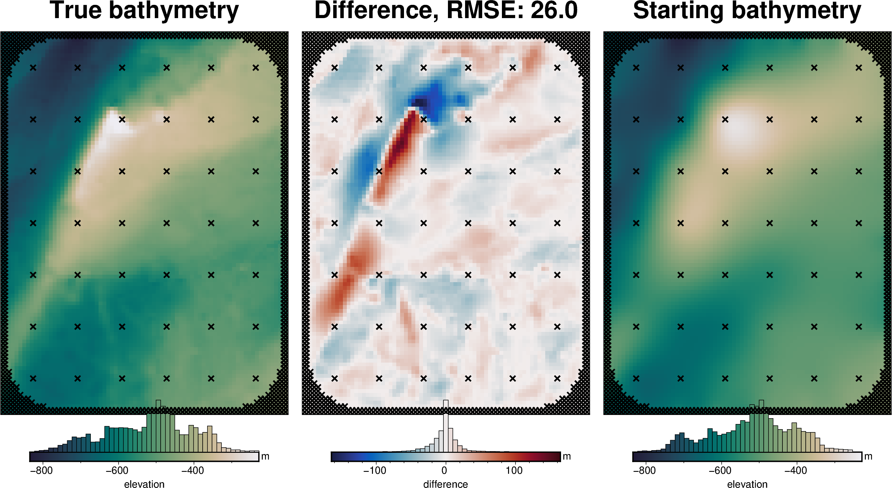
Set line spacings and noise levels¶
[13]:
num = 10
# Define number of flights lines on log scale
grav_line_numbers = np.unique(np.round(np.geomspace(3, 30, num)))
grav_line_numbers = [int(i) for i in grav_line_numbers]
assert len(grav_line_numbers) == num
# Define noise levels for grav data
grav_noise_levels = [float(round(x, 2)) for x in np.linspace(0, 5, num)]
print("number of grav lines:", grav_line_numbers)
print("grav noise levels:", grav_noise_levels)
number of grav lines: [3, 4, 5, 6, 8, 11, 14, 18, 23, 30]
grav noise levels: [0.0, 0.56, 1.11, 1.67, 2.22, 2.78, 3.33, 3.89, 4.44, 5.0]
[14]:
# turn into dataframe
sampled_params_df = pd.DataFrame(
itertools.product(
grav_line_numbers,
grav_noise_levels,
),
columns=[
"grav_line_numbers",
"grav_noise_levels",
],
)
sampled_params_dict = dict(
grav_line_numbers=dict(sampled_values=sampled_params_df.grav_line_numbers),
grav_noise_levels=dict(sampled_values=sampled_params_df.grav_noise_levels),
)
plotting.plot_latin_hypercube(
sampled_params_dict,
)

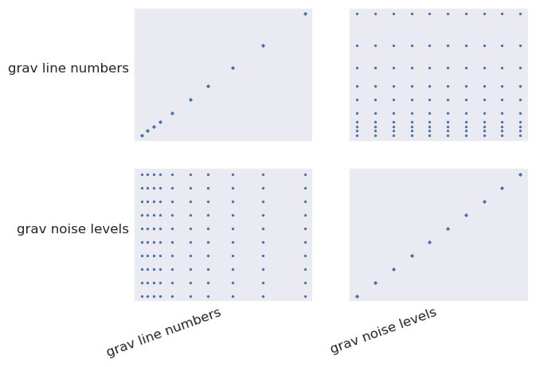
[15]:
sampled_params_df
[15]:
| grav_line_numbers | grav_noise_levels | |
|---|---|---|
| 0 | 3 | 0.00 |
| 1 | 3 | 0.56 |
| 2 | 3 | 1.11 |
| 3 | 3 | 1.67 |
| 4 | 3 | 2.22 |
| ... | ... | ... |
| 95 | 30 | 2.78 |
| 96 | 30 | 3.33 |
| 97 | 30 | 3.89 |
| 98 | 30 | 4.44 |
| 99 | 30 | 5.00 |
100 rows × 2 columns
Contaminate gravity with noise¶
[16]:
# fnames to save files for each ensemble
sampled_params_df["grav_df_fname"] = pd.Series()
for i, row in tqdm(sampled_params_df.iterrows(), total=len(sampled_params_df)):
# set file names, add to dataframe
sampled_params_df.loc[i, "grav_df_fname"] = f"{ensemble_path}_grav_df_{i}.csv"
[17]:
grav_grid = original_grav_df.set_index(["northing", "easting"]).to_xarray()
for i, row in tqdm(sampled_params_df.iterrows(), total=len(sampled_params_df)):
grav_df = original_grav_df.copy()
# contaminated with long-wavelength noise
grav_df["gravity_anomaly_full_res"] = grav_df.gravity_anomaly_full_res_no_noise
with utils._log_level(logging.ERROR):
contaminated = inv_synthetic.contaminate_with_long_wavelength_noise(
grav_grid.gravity_anomaly_full_res_no_noise,
coarsen_factor=None,
spacing=2e3,
noise_as_percent=False,
noise=row.grav_noise_levels,
)
contaminated_df = vd.grid_to_table(
contaminated.rename("gravity_anomaly_full_res")
).reset_index(drop=True)
grav_df = pd.merge( # noqa: PD015
grav_df.drop(columns=["gravity_anomaly_full_res"], errors="ignore"),
contaminated_df,
on=["easting", "northing"],
)
# # short-wavelength noise
# with utils._log_level(logging.ERROR):
# contaminated = synthetic.contaminate_with_long_wavelength_noise(
# grav_df.set_index(["northing", "easting"])
# .to_xarray()
# .gravity_anomaly_full_res,
# coarsen_factor=None,
# spacing=spacing * 2,
# noise_as_percent=False,
# noise=row.grav_noise_levels,
# )
# contaminated_df = vd.grid_to_table(
# contaminated.rename("gravity_anomaly_full_res")
# ).reset_index(drop=True)
# grav_df = pd.merge(
# grav_df.drop(columns=["gravity_anomaly_full_res"], errors="ignore"),
# contaminated_df,
# on=["easting", "northing"],
# )
# add noise level to uncert column
grav_df["uncert"] = row.grav_noise_levels
# save to files
grav_df.to_csv(row.grav_df_fname, index=False)
sampled_params_df.head()
[17]:
| grav_line_numbers | grav_noise_levels | grav_df_fname | |
|---|---|---|---|
| 0 | 3 | 0.00 | ../results/Ross_Sea/ensembles/Ross_Sea_ensembl... |
| 1 | 3 | 0.56 | ../results/Ross_Sea/ensembles/Ross_Sea_ensembl... |
| 2 | 3 | 1.11 | ../results/Ross_Sea/ensembles/Ross_Sea_ensembl... |
| 3 | 3 | 1.67 | ../results/Ross_Sea/ensembles/Ross_Sea_ensembl... |
| 4 | 3 | 2.22 | ../results/Ross_Sea/ensembles/Ross_Sea_ensembl... |
[18]:
sampled_params_df.to_csv(ensemble_fname, index=False)
[19]:
sampled_params_df = pd.read_csv(ensemble_fname)
sampled_params_df.head()
[19]:
| grav_line_numbers | grav_noise_levels | grav_df_fname | |
|---|---|---|---|
| 0 | 3 | 0.00 | ../results/Ross_Sea/ensembles/Ross_Sea_ensembl... |
| 1 | 3 | 0.56 | ../results/Ross_Sea/ensembles/Ross_Sea_ensembl... |
| 2 | 3 | 1.11 | ../results/Ross_Sea/ensembles/Ross_Sea_ensembl... |
| 3 | 3 | 1.67 | ../results/Ross_Sea/ensembles/Ross_Sea_ensembl... |
| 4 | 3 | 2.22 | ../results/Ross_Sea/ensembles/Ross_Sea_ensembl... |
[20]:
# subplots showing grav data loss from sampling
grids = []
titles = []
cbar_labels = []
for i, row in sampled_params_df.iterrows():
if i < num:
grav_df = pd.read_csv(row.grav_df_fname)
grav_grid = grav_df.set_index(["northing", "easting"]).to_xarray()
dif = (
grav_grid.gravity_anomaly_full_res_no_noise
- grav_grid.gravity_anomaly_full_res
)
# add to lists
grids.append(dif)
titles.append(f"noise level: {round(row.grav_noise_levels, 1)} mGal")
cbar_labels.append(f"RMSE: {round(utils.rmse(dif), 2)} (mGal)")
fig = maps.subplots(
grids,
fig_title="Gravity noise",
titles=titles,
cbar_labels=cbar_labels,
cmap="balance+h0",
hist=True,
cpt_lims=polar_utils.get_combined_min_max(grids, robust=True),
cbar_font="18p,Helvetica,black",
yshift_amount=-1.2,
)
fig.show()

Sample along flightlines¶
[21]:
# fnames to save files for each ensemble
sampled_params_df["grav_survey_df_fname"] = pd.Series()
for i, row in tqdm(sampled_params_df.iterrows(), total=len(sampled_params_df)):
# set file names, add to dataframe
sampled_params_df.loc[i, "grav_survey_df_fname"] = (
f"{ensemble_path}_grav_survey_df_{i}.csv"
)
[22]:
logging.getLogger().setLevel(logging.WARNING)
# add empty columns
# average of the east/west and north/south line spacings
sampled_params_df["grav_line_spacing"] = pd.Series()
for i, row in tqdm(sampled_params_df.iterrows(), total=len(sampled_params_df)):
# load data
grav_df = pd.read_csv(row.grav_df_fname)
# create flight lines
grav_survey_df = synthetic.airborne_survey(
along_line_spacing=500,
grav_observation_height=1e3,
ns_line_number=row.grav_line_numbers,
ew_line_number=row.grav_line_numbers,
region=inversion_region,
grav_grid=grav_df.set_index(["northing", "easting"])
.to_xarray()
.gravity_anomaly_full_res,
plot=False,
)
x_spacing = (inversion_region[1] - inversion_region[0]) / row.grav_line_numbers
y_spacing = (inversion_region[3] - inversion_region[2]) / row.grav_line_numbers
grav_line_spacing = ((x_spacing + y_spacing) / 2) / 1e3
# sample no-noise grid onto survey lines
grav_survey_df = utils.sample_grids(
grav_survey_df,
grav_df.set_index(
["northing", "easting"]
).gravity_anomaly_full_res_no_noise.to_xarray(),
sampled_name="gravity_anomaly_no_noise",
)
# add to dataframe
sampled_params_df.loc[i, "grav_line_spacing"] = grav_line_spacing
# save to files
grav_survey_df.to_csv(row.grav_survey_df_fname, index=False)
sampled_params_df
[22]:
| grav_line_numbers | grav_noise_levels | grav_df_fname | grav_survey_df_fname | grav_line_spacing | |
|---|---|---|---|---|---|
| 0 | 3 | 0.00 | ../results/Ross_Sea/ensembles/Ross_Sea_ensembl... | ../results/Ross_Sea/ensembles/Ross_Sea_ensembl... | 58.333333 |
| 1 | 3 | 0.56 | ../results/Ross_Sea/ensembles/Ross_Sea_ensembl... | ../results/Ross_Sea/ensembles/Ross_Sea_ensembl... | 58.333333 |
| 2 | 3 | 1.11 | ../results/Ross_Sea/ensembles/Ross_Sea_ensembl... | ../results/Ross_Sea/ensembles/Ross_Sea_ensembl... | 58.333333 |
| 3 | 3 | 1.67 | ../results/Ross_Sea/ensembles/Ross_Sea_ensembl... | ../results/Ross_Sea/ensembles/Ross_Sea_ensembl... | 58.333333 |
| 4 | 3 | 2.22 | ../results/Ross_Sea/ensembles/Ross_Sea_ensembl... | ../results/Ross_Sea/ensembles/Ross_Sea_ensembl... | 58.333333 |
| ... | ... | ... | ... | ... | ... |
| 95 | 30 | 2.78 | ../results/Ross_Sea/ensembles/Ross_Sea_ensembl... | ../results/Ross_Sea/ensembles/Ross_Sea_ensembl... | 5.833333 |
| 96 | 30 | 3.33 | ../results/Ross_Sea/ensembles/Ross_Sea_ensembl... | ../results/Ross_Sea/ensembles/Ross_Sea_ensembl... | 5.833333 |
| 97 | 30 | 3.89 | ../results/Ross_Sea/ensembles/Ross_Sea_ensembl... | ../results/Ross_Sea/ensembles/Ross_Sea_ensembl... | 5.833333 |
| 98 | 30 | 4.44 | ../results/Ross_Sea/ensembles/Ross_Sea_ensembl... | ../results/Ross_Sea/ensembles/Ross_Sea_ensembl... | 5.833333 |
| 99 | 30 | 5.00 | ../results/Ross_Sea/ensembles/Ross_Sea_ensembl... | ../results/Ross_Sea/ensembles/Ross_Sea_ensembl... | 5.833333 |
100 rows × 5 columns
[23]:
sampled_params_df["grav_proximity"] = np.nan
for i, row in sampled_params_df.iterrows():
# load data
grav_survey_df = pd.read_csv(row.grav_survey_df_fname)
# calc min distance
coords = vd.grid_coordinates(
region=inversion_region,
spacing=100,
)
grid = vd.make_xarray_grid(coords, np.ones_like(coords[0]), data_names="z").z
min_dist = utils.dist_nearest_points(
grav_survey_df,
grid,
).min_dist
grav_proximity = min_dist.median().to_numpy() / 1e3
sampled_params_df.loc[i, "grav_proximity"] = grav_proximity
sampled_params_df.grav_proximity.describe()
[23]:
count 100.000000
mean 3.430303
std 2.368128
min 0.824621
25% 1.400000
50% 2.704055
75% 5.001000
max 8.333333
Name: grav_proximity, dtype: float64
Filter flight line data¶
[24]:
# add empty columns
sampled_params_df["filter_width_trials_fname"] = np.nan
for i, row in sampled_params_df.iterrows():
# set file names, add to dataframe
sampled_params_df.loc[i, "filter_width_trials_fname"] = (
f"{ensemble_path}_filter_width_trials_{i}.csv"
)
[26]:
logging.getLogger().setLevel(logging.WARNING)
for i, row in tqdm(sampled_params_df.iterrows(), total=len(sampled_params_df)):
# load data
grav_df = pd.read_csv(row.grav_df_fname)
grav_survey_df = pd.read_csv(row.grav_survey_df_fname)
# trial a range of 1D low-pass filters and see which performs best
dfs = []
filter_widths = np.arange(0, 50e3, 4e3)
for f in filter_widths:
survey_df = grav_survey_df.copy()
if f == 0:
survey_df["grav_anomaly_filt"] = survey_df.gravity_anomaly
else:
survey_df["grav_anomaly_filt"] = synthetic.filter_flight_lines(
survey_df,
data_column="gravity_anomaly",
filt_type=f"g{f}",
)
# compared filtered line data with no-noise line data
survey_df["dif"] = (
survey_df.gravity_anomaly_no_noise - survey_df.grav_anomaly_filt
)
dfs.append(
pd.DataFrame(
[
{
"filt_width": f,
"rmse": utils.rmse(survey_df.dif),
}
]
)
)
filter_width_trials = pd.concat(dfs, ignore_index=True)
# save to files
filter_width_trials.to_csv(row.filter_width_trials_fname, index=False)
sampled_params_df
[26]:
| grav_line_numbers | grav_noise_levels | grav_df_fname | grav_survey_df_fname | grav_line_spacing | grav_proximity | filter_width_trials_fname | |
|---|---|---|---|---|---|---|---|
| 0 | 3 | 0.00 | ../results/Ross_Sea/ensembles/Ross_Sea_ensembl... | ../results/Ross_Sea/ensembles/Ross_Sea_ensembl... | 58.333333 | 8.333333 | ../results/Ross_Sea/ensembles/Ross_Sea_ensembl... |
| 1 | 3 | 0.56 | ../results/Ross_Sea/ensembles/Ross_Sea_ensembl... | ../results/Ross_Sea/ensembles/Ross_Sea_ensembl... | 58.333333 | 8.333333 | ../results/Ross_Sea/ensembles/Ross_Sea_ensembl... |
| 2 | 3 | 1.11 | ../results/Ross_Sea/ensembles/Ross_Sea_ensembl... | ../results/Ross_Sea/ensembles/Ross_Sea_ensembl... | 58.333333 | 8.333333 | ../results/Ross_Sea/ensembles/Ross_Sea_ensembl... |
| 3 | 3 | 1.67 | ../results/Ross_Sea/ensembles/Ross_Sea_ensembl... | ../results/Ross_Sea/ensembles/Ross_Sea_ensembl... | 58.333333 | 8.333333 | ../results/Ross_Sea/ensembles/Ross_Sea_ensembl... |
| 4 | 3 | 2.22 | ../results/Ross_Sea/ensembles/Ross_Sea_ensembl... | ../results/Ross_Sea/ensembles/Ross_Sea_ensembl... | 58.333333 | 8.333333 | ../results/Ross_Sea/ensembles/Ross_Sea_ensembl... |
| ... | ... | ... | ... | ... | ... | ... | ... |
| 95 | 30 | 2.78 | ../results/Ross_Sea/ensembles/Ross_Sea_ensembl... | ../results/Ross_Sea/ensembles/Ross_Sea_ensembl... | 5.833333 | 0.824621 | ../results/Ross_Sea/ensembles/Ross_Sea_ensembl... |
| 96 | 30 | 3.33 | ../results/Ross_Sea/ensembles/Ross_Sea_ensembl... | ../results/Ross_Sea/ensembles/Ross_Sea_ensembl... | 5.833333 | 0.824621 | ../results/Ross_Sea/ensembles/Ross_Sea_ensembl... |
| 97 | 30 | 3.89 | ../results/Ross_Sea/ensembles/Ross_Sea_ensembl... | ../results/Ross_Sea/ensembles/Ross_Sea_ensembl... | 5.833333 | 0.824621 | ../results/Ross_Sea/ensembles/Ross_Sea_ensembl... |
| 98 | 30 | 4.44 | ../results/Ross_Sea/ensembles/Ross_Sea_ensembl... | ../results/Ross_Sea/ensembles/Ross_Sea_ensembl... | 5.833333 | 0.824621 | ../results/Ross_Sea/ensembles/Ross_Sea_ensembl... |
| 99 | 30 | 5.00 | ../results/Ross_Sea/ensembles/Ross_Sea_ensembl... | ../results/Ross_Sea/ensembles/Ross_Sea_ensembl... | 5.833333 | 0.824621 | ../results/Ross_Sea/ensembles/Ross_Sea_ensembl... |
100 rows × 7 columns
[27]:
# add empty columns
sampled_params_df["best_filter_width"] = np.nan
for i, row in tqdm(sampled_params_df.iterrows(), total=len(sampled_params_df)):
# load data
filter_width_trials = pd.read_csv(row.filter_width_trials_fname)
best_ind = filter_width_trials.rmse.idxmin()
best_filter_width = filter_width_trials.iloc[best_ind].filt_width
sampled_params_df.loc[i, "best_filter_width"] = best_filter_width
sampled_params_df
[27]:
| grav_line_numbers | grav_noise_levels | grav_df_fname | grav_survey_df_fname | grav_line_spacing | grav_proximity | filter_width_trials_fname | best_filter_width | |
|---|---|---|---|---|---|---|---|---|
| 0 | 3 | 0.00 | ../results/Ross_Sea/ensembles/Ross_Sea_ensembl... | ../results/Ross_Sea/ensembles/Ross_Sea_ensembl... | 58.333333 | 8.333333 | ../results/Ross_Sea/ensembles/Ross_Sea_ensembl... | 0.0 |
| 1 | 3 | 0.56 | ../results/Ross_Sea/ensembles/Ross_Sea_ensembl... | ../results/Ross_Sea/ensembles/Ross_Sea_ensembl... | 58.333333 | 8.333333 | ../results/Ross_Sea/ensembles/Ross_Sea_ensembl... | 12000.0 |
| 2 | 3 | 1.11 | ../results/Ross_Sea/ensembles/Ross_Sea_ensembl... | ../results/Ross_Sea/ensembles/Ross_Sea_ensembl... | 58.333333 | 8.333333 | ../results/Ross_Sea/ensembles/Ross_Sea_ensembl... | 20000.0 |
| 3 | 3 | 1.67 | ../results/Ross_Sea/ensembles/Ross_Sea_ensembl... | ../results/Ross_Sea/ensembles/Ross_Sea_ensembl... | 58.333333 | 8.333333 | ../results/Ross_Sea/ensembles/Ross_Sea_ensembl... | 24000.0 |
| 4 | 3 | 2.22 | ../results/Ross_Sea/ensembles/Ross_Sea_ensembl... | ../results/Ross_Sea/ensembles/Ross_Sea_ensembl... | 58.333333 | 8.333333 | ../results/Ross_Sea/ensembles/Ross_Sea_ensembl... | 28000.0 |
| ... | ... | ... | ... | ... | ... | ... | ... | ... |
| 95 | 30 | 2.78 | ../results/Ross_Sea/ensembles/Ross_Sea_ensembl... | ../results/Ross_Sea/ensembles/Ross_Sea_ensembl... | 5.833333 | 0.824621 | ../results/Ross_Sea/ensembles/Ross_Sea_ensembl... | 28000.0 |
| 96 | 30 | 3.33 | ../results/Ross_Sea/ensembles/Ross_Sea_ensembl... | ../results/Ross_Sea/ensembles/Ross_Sea_ensembl... | 5.833333 | 0.824621 | ../results/Ross_Sea/ensembles/Ross_Sea_ensembl... | 32000.0 |
| 97 | 30 | 3.89 | ../results/Ross_Sea/ensembles/Ross_Sea_ensembl... | ../results/Ross_Sea/ensembles/Ross_Sea_ensembl... | 5.833333 | 0.824621 | ../results/Ross_Sea/ensembles/Ross_Sea_ensembl... | 32000.0 |
| 98 | 30 | 4.44 | ../results/Ross_Sea/ensembles/Ross_Sea_ensembl... | ../results/Ross_Sea/ensembles/Ross_Sea_ensembl... | 5.833333 | 0.824621 | ../results/Ross_Sea/ensembles/Ross_Sea_ensembl... | 36000.0 |
| 99 | 30 | 5.00 | ../results/Ross_Sea/ensembles/Ross_Sea_ensembl... | ../results/Ross_Sea/ensembles/Ross_Sea_ensembl... | 5.833333 | 0.824621 | ../results/Ross_Sea/ensembles/Ross_Sea_ensembl... | 36000.0 |
100 rows × 8 columns
[ ]:
df = sampled_params_df.copy()
norm = plt.Normalize(
vmin=df.grav_noise_levels.to_numpy().min(),
vmax=df.grav_noise_levels.to_numpy().max(),
)
fig, ax = plt.subplots()
for i, row in df.iterrows():
# load data
filter_width_trials = pd.read_csv(row.filter_width_trials_fname)
best_ind = filter_width_trials.rmse.idxmin()
ax.plot(
filter_width_trials.filt_width,
filter_width_trials.rmse,
color=plt.cm.viridis(norm(row.grav_noise_levels)), # pylint: disable=no-member
)
ax.set_xlabel("Filter width (m)")
ax.set_ylabel("RMSE (mGal)")
ax.scatter(
# x=filter_width_trials.filt_width.iloc[best_ind],
x=row.best_filter_width,
y=filter_width_trials.rmse.iloc[best_ind],
marker="*",
edgecolor="black",
linewidth=0.5,
color=plt.cm.viridis(norm(row.grav_noise_levels)), # pylint: disable=no-member
s=60,
zorder=20,
)
sm = plt.cm.ScalarMappable(cmap="viridis", norm=norm)
cax = fig.add_axes([0.93, 0.1, 0.05, 0.8])
cbar = plt.colorbar(sm, cax=cax)
cbar.set_label("noise level")
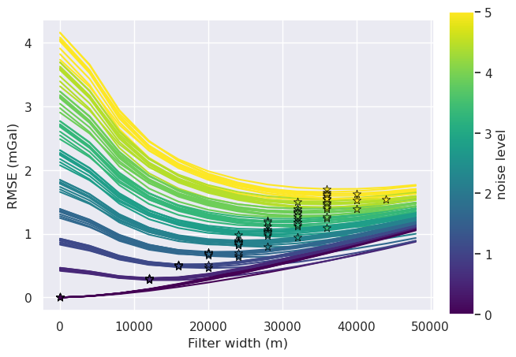
[29]:
# variable = grav_noise_levels
# title = "Gravity noise (mGal)"
variable = "grav_line_spacing"
title = "Line spacing (m)"
norm = plt.Normalize(
vmin=sampled_params_df[variable].to_numpy().min(),
vmax=sampled_params_df[variable].to_numpy().max(),
)
for i, row in tqdm(sampled_params_df.iterrows(), total=len(sampled_params_df)):
# load data
filter_width_trials = pd.read_csv(row.filter_width_trials_fname)
best_ind = filter_width_trials.rmse.idxmin()
best_filter_width = filter_width_trials.iloc[best_ind].filt_width
if i == 0:
fig, ax = plt.subplots()
ax.plot(
filter_width_trials.filt_width,
filter_width_trials.rmse,
color=plt.cm.viridis(norm(row[variable])), # pylint: disable=no-member
)
ax.set_xlabel("Filter width (m)")
ax.set_ylabel("RMSE (mGal)")
ax.scatter(
x=filter_width_trials.filt_width.iloc[best_ind],
y=filter_width_trials.rmse.iloc[best_ind],
marker="*",
edgecolor="black",
linewidth=0.5,
color=plt.cm.viridis(norm(row[variable])), # pylint: disable=no-member
s=60,
zorder=20,
)
sm = plt.cm.ScalarMappable(cmap="viridis", norm=norm)
cax = fig.add_axes([0.93, 0.1, 0.05, 0.8])
cbar = plt.colorbar(sm, cax=cax)
cbar.set_label(title)
sampled_params_df
[29]:
| grav_line_numbers | grav_noise_levels | grav_df_fname | grav_survey_df_fname | grav_line_spacing | grav_proximity | filter_width_trials_fname | best_filter_width | |
|---|---|---|---|---|---|---|---|---|
| 0 | 3 | 0.00 | ../results/Ross_Sea/ensembles/Ross_Sea_ensembl... | ../results/Ross_Sea/ensembles/Ross_Sea_ensembl... | 58.333333 | 8.333333 | ../results/Ross_Sea/ensembles/Ross_Sea_ensembl... | 0.0 |
| 1 | 3 | 0.56 | ../results/Ross_Sea/ensembles/Ross_Sea_ensembl... | ../results/Ross_Sea/ensembles/Ross_Sea_ensembl... | 58.333333 | 8.333333 | ../results/Ross_Sea/ensembles/Ross_Sea_ensembl... | 12000.0 |
| 2 | 3 | 1.11 | ../results/Ross_Sea/ensembles/Ross_Sea_ensembl... | ../results/Ross_Sea/ensembles/Ross_Sea_ensembl... | 58.333333 | 8.333333 | ../results/Ross_Sea/ensembles/Ross_Sea_ensembl... | 20000.0 |
| 3 | 3 | 1.67 | ../results/Ross_Sea/ensembles/Ross_Sea_ensembl... | ../results/Ross_Sea/ensembles/Ross_Sea_ensembl... | 58.333333 | 8.333333 | ../results/Ross_Sea/ensembles/Ross_Sea_ensembl... | 24000.0 |
| 4 | 3 | 2.22 | ../results/Ross_Sea/ensembles/Ross_Sea_ensembl... | ../results/Ross_Sea/ensembles/Ross_Sea_ensembl... | 58.333333 | 8.333333 | ../results/Ross_Sea/ensembles/Ross_Sea_ensembl... | 28000.0 |
| ... | ... | ... | ... | ... | ... | ... | ... | ... |
| 95 | 30 | 2.78 | ../results/Ross_Sea/ensembles/Ross_Sea_ensembl... | ../results/Ross_Sea/ensembles/Ross_Sea_ensembl... | 5.833333 | 0.824621 | ../results/Ross_Sea/ensembles/Ross_Sea_ensembl... | 28000.0 |
| 96 | 30 | 3.33 | ../results/Ross_Sea/ensembles/Ross_Sea_ensembl... | ../results/Ross_Sea/ensembles/Ross_Sea_ensembl... | 5.833333 | 0.824621 | ../results/Ross_Sea/ensembles/Ross_Sea_ensembl... | 32000.0 |
| 97 | 30 | 3.89 | ../results/Ross_Sea/ensembles/Ross_Sea_ensembl... | ../results/Ross_Sea/ensembles/Ross_Sea_ensembl... | 5.833333 | 0.824621 | ../results/Ross_Sea/ensembles/Ross_Sea_ensembl... | 32000.0 |
| 98 | 30 | 4.44 | ../results/Ross_Sea/ensembles/Ross_Sea_ensembl... | ../results/Ross_Sea/ensembles/Ross_Sea_ensembl... | 5.833333 | 0.824621 | ../results/Ross_Sea/ensembles/Ross_Sea_ensembl... | 36000.0 |
| 99 | 30 | 5.00 | ../results/Ross_Sea/ensembles/Ross_Sea_ensembl... | ../results/Ross_Sea/ensembles/Ross_Sea_ensembl... | 5.833333 | 0.824621 | ../results/Ross_Sea/ensembles/Ross_Sea_ensembl... | 36000.0 |
100 rows × 8 columns
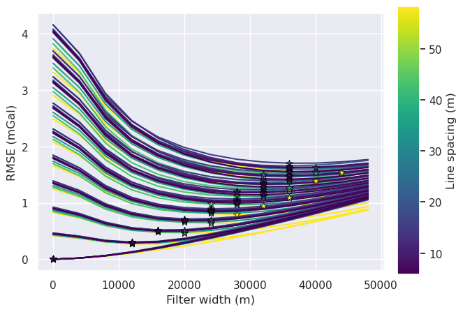
[30]:
sampled_params_df[sampled_params_df.grav_noise_levels > 0]
[30]:
| grav_line_numbers | grav_noise_levels | grav_df_fname | grav_survey_df_fname | grav_line_spacing | grav_proximity | filter_width_trials_fname | best_filter_width | |
|---|---|---|---|---|---|---|---|---|
| 1 | 3 | 0.56 | ../results/Ross_Sea/ensembles/Ross_Sea_ensembl... | ../results/Ross_Sea/ensembles/Ross_Sea_ensembl... | 58.333333 | 8.333333 | ../results/Ross_Sea/ensembles/Ross_Sea_ensembl... | 12000.0 |
| 2 | 3 | 1.11 | ../results/Ross_Sea/ensembles/Ross_Sea_ensembl... | ../results/Ross_Sea/ensembles/Ross_Sea_ensembl... | 58.333333 | 8.333333 | ../results/Ross_Sea/ensembles/Ross_Sea_ensembl... | 20000.0 |
| 3 | 3 | 1.67 | ../results/Ross_Sea/ensembles/Ross_Sea_ensembl... | ../results/Ross_Sea/ensembles/Ross_Sea_ensembl... | 58.333333 | 8.333333 | ../results/Ross_Sea/ensembles/Ross_Sea_ensembl... | 24000.0 |
| 4 | 3 | 2.22 | ../results/Ross_Sea/ensembles/Ross_Sea_ensembl... | ../results/Ross_Sea/ensembles/Ross_Sea_ensembl... | 58.333333 | 8.333333 | ../results/Ross_Sea/ensembles/Ross_Sea_ensembl... | 28000.0 |
| 5 | 3 | 2.78 | ../results/Ross_Sea/ensembles/Ross_Sea_ensembl... | ../results/Ross_Sea/ensembles/Ross_Sea_ensembl... | 58.333333 | 8.333333 | ../results/Ross_Sea/ensembles/Ross_Sea_ensembl... | 32000.0 |
| ... | ... | ... | ... | ... | ... | ... | ... | ... |
| 95 | 30 | 2.78 | ../results/Ross_Sea/ensembles/Ross_Sea_ensembl... | ../results/Ross_Sea/ensembles/Ross_Sea_ensembl... | 5.833333 | 0.824621 | ../results/Ross_Sea/ensembles/Ross_Sea_ensembl... | 28000.0 |
| 96 | 30 | 3.33 | ../results/Ross_Sea/ensembles/Ross_Sea_ensembl... | ../results/Ross_Sea/ensembles/Ross_Sea_ensembl... | 5.833333 | 0.824621 | ../results/Ross_Sea/ensembles/Ross_Sea_ensembl... | 32000.0 |
| 97 | 30 | 3.89 | ../results/Ross_Sea/ensembles/Ross_Sea_ensembl... | ../results/Ross_Sea/ensembles/Ross_Sea_ensembl... | 5.833333 | 0.824621 | ../results/Ross_Sea/ensembles/Ross_Sea_ensembl... | 32000.0 |
| 98 | 30 | 4.44 | ../results/Ross_Sea/ensembles/Ross_Sea_ensembl... | ../results/Ross_Sea/ensembles/Ross_Sea_ensembl... | 5.833333 | 0.824621 | ../results/Ross_Sea/ensembles/Ross_Sea_ensembl... | 36000.0 |
| 99 | 30 | 5.00 | ../results/Ross_Sea/ensembles/Ross_Sea_ensembl... | ../results/Ross_Sea/ensembles/Ross_Sea_ensembl... | 5.833333 | 0.824621 | ../results/Ross_Sea/ensembles/Ross_Sea_ensembl... | 36000.0 |
90 rows × 8 columns
[31]:
fig = synth_plotting.plot_2var_ensemble(
sampled_params_df[sampled_params_df.grav_noise_levels > 0],
x="grav_line_spacing",
y="grav_noise_levels",
x_title="Line spacing (km)",
y_title="Gravity noise (mGal)",
background="best_filter_width",
background_title="Optimal filter width (m)",
background_robust=True,
constrained_layout=False,
)
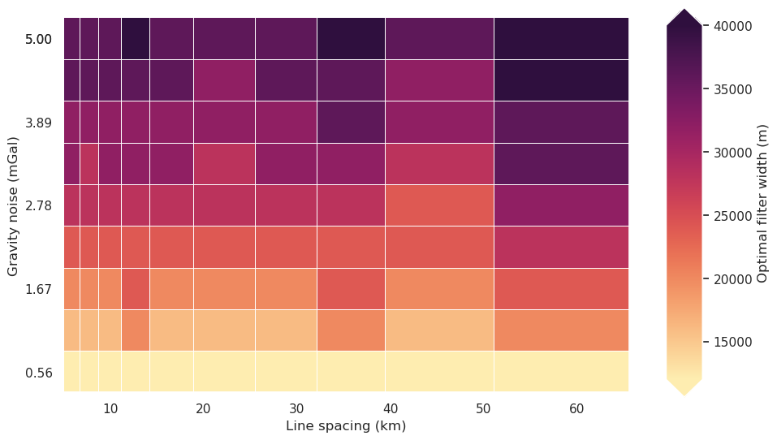
[32]:
sampled_params_df.best_filter_width.plot.hist()
[32]:
<Axes: ylabel='Frequency'>
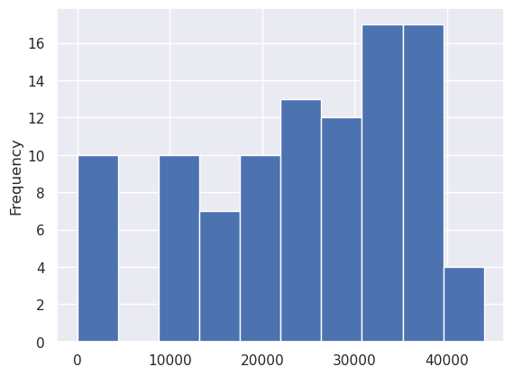
[33]:
logging.getLogger().setLevel(logging.WARNING)
for i, row in tqdm(sampled_params_df.iterrows(), total=len(sampled_params_df)):
# load data
grav_survey_df = pd.read_csv(row.grav_survey_df_fname)
# filter each line in 1D with a Gaussian filter to remove some noise
if row.best_filter_width == 0:
grav_survey_df["gravity_anomaly"] = grav_survey_df.gravity_anomaly
else:
grav_survey_df["gravity_anomaly"] = synthetic.filter_flight_lines(
grav_survey_df,
data_column="gravity_anomaly",
filt_type=f"g{row.best_filter_width}",
)
# save to files
grav_survey_df.to_csv(row.grav_survey_df_fname, index=False)
Interpolate flight line data¶
[34]:
logging.getLogger().setLevel(logging.WARNING)
# add empty columns
sampled_params_df["grav_data_loss_rmse"] = np.nan
sampled_params_df["grav_data_loss_mae"] = np.nan
for i, row in tqdm(sampled_params_df.iterrows(), total=len(sampled_params_df)):
# load data
grav_df = pd.read_csv(row.grav_df_fname)
grav_survey_df = pd.read_csv(row.grav_survey_df_fname)
grav_grid = pygmt.surface(
data=grav_survey_df[["easting", "northing", "gravity_anomaly"]],
region=inversion_region,
spacing=spacing,
tension=0.25,
verbose="q",
)
grav_df = utils.sample_grids(
grav_df,
grav_grid,
sampled_name="gravity_anomaly",
)
# add to dataframe
dif = grav_df.gravity_anomaly_full_res_no_noise - grav_df.gravity_anomaly
sampled_params_df.loc[i, "grav_data_loss_rmse"] = float(utils.rmse(dif))
sampled_params_df.loc[i, "grav_data_loss_mae"] = float(np.abs(dif).mean())
# save to files
grav_survey_df.to_csv(row.grav_survey_df_fname, index=False)
grav_df.to_csv(row.grav_df_fname, index=False)
sampled_params_df
[34]:
| grav_line_numbers | grav_noise_levels | grav_df_fname | grav_survey_df_fname | grav_line_spacing | grav_proximity | filter_width_trials_fname | best_filter_width | grav_data_loss_rmse | grav_data_loss_mae | |
|---|---|---|---|---|---|---|---|---|---|---|
| 0 | 3 | 0.00 | ../results/Ross_Sea/ensembles/Ross_Sea_ensembl... | ../results/Ross_Sea/ensembles/Ross_Sea_ensembl... | 58.333333 | 8.333333 | ../results/Ross_Sea/ensembles/Ross_Sea_ensembl... | 0.0 | 4.590279 | 2.771183 |
| 1 | 3 | 0.56 | ../results/Ross_Sea/ensembles/Ross_Sea_ensembl... | ../results/Ross_Sea/ensembles/Ross_Sea_ensembl... | 58.333333 | 8.333333 | ../results/Ross_Sea/ensembles/Ross_Sea_ensembl... | 12000.0 | 4.602217 | 2.807339 |
| 2 | 3 | 1.11 | ../results/Ross_Sea/ensembles/Ross_Sea_ensembl... | ../results/Ross_Sea/ensembles/Ross_Sea_ensembl... | 58.333333 | 8.333333 | ../results/Ross_Sea/ensembles/Ross_Sea_ensembl... | 20000.0 | 4.631439 | 2.867490 |
| 3 | 3 | 1.67 | ../results/Ross_Sea/ensembles/Ross_Sea_ensembl... | ../results/Ross_Sea/ensembles/Ross_Sea_ensembl... | 58.333333 | 8.333333 | ../results/Ross_Sea/ensembles/Ross_Sea_ensembl... | 24000.0 | 4.635158 | 2.914395 |
| 4 | 3 | 2.22 | ../results/Ross_Sea/ensembles/Ross_Sea_ensembl... | ../results/Ross_Sea/ensembles/Ross_Sea_ensembl... | 58.333333 | 8.333333 | ../results/Ross_Sea/ensembles/Ross_Sea_ensembl... | 28000.0 | 4.644990 | 2.967470 |
| ... | ... | ... | ... | ... | ... | ... | ... | ... | ... | ... |
| 95 | 30 | 2.78 | ../results/Ross_Sea/ensembles/Ross_Sea_ensembl... | ../results/Ross_Sea/ensembles/Ross_Sea_ensembl... | 5.833333 | 0.824621 | ../results/Ross_Sea/ensembles/Ross_Sea_ensembl... | 28000.0 | 0.934757 | 0.707599 |
| 96 | 30 | 3.33 | ../results/Ross_Sea/ensembles/Ross_Sea_ensembl... | ../results/Ross_Sea/ensembles/Ross_Sea_ensembl... | 5.833333 | 0.824621 | ../results/Ross_Sea/ensembles/Ross_Sea_ensembl... | 32000.0 | 1.063542 | 0.802304 |
| 97 | 30 | 3.89 | ../results/Ross_Sea/ensembles/Ross_Sea_ensembl... | ../results/Ross_Sea/ensembles/Ross_Sea_ensembl... | 5.833333 | 0.824621 | ../results/Ross_Sea/ensembles/Ross_Sea_ensembl... | 32000.0 | 1.181158 | 0.900176 |
| 98 | 30 | 4.44 | ../results/Ross_Sea/ensembles/Ross_Sea_ensembl... | ../results/Ross_Sea/ensembles/Ross_Sea_ensembl... | 5.833333 | 0.824621 | ../results/Ross_Sea/ensembles/Ross_Sea_ensembl... | 36000.0 | 1.299336 | 0.985363 |
| 99 | 30 | 5.00 | ../results/Ross_Sea/ensembles/Ross_Sea_ensembl... | ../results/Ross_Sea/ensembles/Ross_Sea_ensembl... | 5.833333 | 0.824621 | ../results/Ross_Sea/ensembles/Ross_Sea_ensembl... | 36000.0 | 1.412226 | 1.078067 |
100 rows × 10 columns
[35]:
sampled_params_df.to_csv(ensemble_fname, index=False)
[36]:
sampled_params_df = pd.read_csv(ensemble_fname)
sampled_params_df.head()
[36]:
| grav_line_numbers | grav_noise_levels | grav_df_fname | grav_survey_df_fname | grav_line_spacing | grav_proximity | filter_width_trials_fname | best_filter_width | grav_data_loss_rmse | grav_data_loss_mae | |
|---|---|---|---|---|---|---|---|---|---|---|
| 0 | 3 | 0.00 | ../results/Ross_Sea/ensembles/Ross_Sea_ensembl... | ../results/Ross_Sea/ensembles/Ross_Sea_ensembl... | 58.333333 | 8.333333 | ../results/Ross_Sea/ensembles/Ross_Sea_ensembl... | 0.0 | 4.590279 | 2.771183 |
| 1 | 3 | 0.56 | ../results/Ross_Sea/ensembles/Ross_Sea_ensembl... | ../results/Ross_Sea/ensembles/Ross_Sea_ensembl... | 58.333333 | 8.333333 | ../results/Ross_Sea/ensembles/Ross_Sea_ensembl... | 12000.0 | 4.602217 | 2.807339 |
| 2 | 3 | 1.11 | ../results/Ross_Sea/ensembles/Ross_Sea_ensembl... | ../results/Ross_Sea/ensembles/Ross_Sea_ensembl... | 58.333333 | 8.333333 | ../results/Ross_Sea/ensembles/Ross_Sea_ensembl... | 20000.0 | 4.631439 | 2.867490 |
| 3 | 3 | 1.67 | ../results/Ross_Sea/ensembles/Ross_Sea_ensembl... | ../results/Ross_Sea/ensembles/Ross_Sea_ensembl... | 58.333333 | 8.333333 | ../results/Ross_Sea/ensembles/Ross_Sea_ensembl... | 24000.0 | 4.635158 | 2.914395 |
| 4 | 3 | 2.22 | ../results/Ross_Sea/ensembles/Ross_Sea_ensembl... | ../results/Ross_Sea/ensembles/Ross_Sea_ensembl... | 58.333333 | 8.333333 | ../results/Ross_Sea/ensembles/Ross_Sea_ensembl... | 28000.0 | 4.644990 | 2.967470 |
[37]:
fig = synth_plotting.plot_2var_ensemble(
sampled_params_df,
x="grav_line_spacing",
y="grav_noise_levels",
x_title="Line spacing (km)",
y_title="Gravity noise (mGal)",
background="grav_data_loss_rmse",
background_title="Gravity data RMSE (m)",
plot_title="Gravity spacing vs noise; medium regional field",
constrained_layout=False,
)
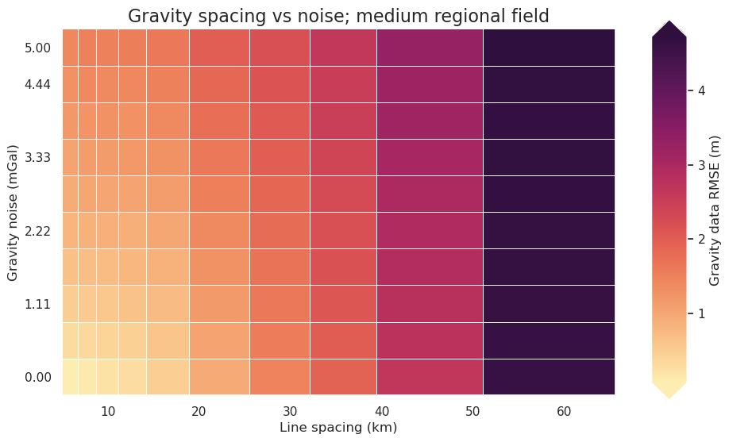
[38]:
x = "grav_line_spacing"
fig = synth_plotting.plot_ensemble_as_lines(
sampled_params_df,
figsize=(4, 2),
x=x,
x_label="Line spacing (km)",
y="grav_data_loss_rmse",
y_label="Gravity data RMSE (m)",
groupby_col="grav_noise_levels",
cbar_label="Gravity noise (mGal)",
# logx=True,
)
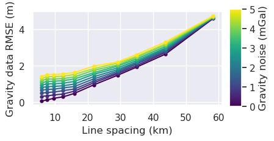
[39]:
x = "grav_line_spacing"
fig = synth_plotting.plot_ensemble_as_lines(
sampled_params_df,
figsize=(4, 2),
x=x,
x_label="Line spacing (km)",
y="grav_data_loss_rmse",
y_label="Gravity data RMSE (m)",
groupby_col="grav_noise_levels",
cbar_label="Gravity noise (mGal)",
logx=True,
)
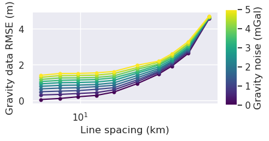
[40]:
# subplots showing grav data loss from sampling and noise
grids = []
cbar_labels = []
row_titles = []
column_titles = []
surveys = []
# iterate over the ensemble starting with high noise, low line numbers
# row per noise level and column per line spacing
for i, row in sampled_params_df.sort_values(
by=["grav_noise_levels", "grav_line_spacing"],
ascending=False,
).iterrows():
grav_df = pd.read_csv(row.grav_df_fname)
grav_grid = grav_df.set_index(["northing", "easting"]).to_xarray()
dif = grav_grid.gravity_anomaly_full_res_no_noise - grav_grid.gravity_anomaly
# add to lists
grids.append(dif)
cbar_labels.append(f"RMSE:{round(utils.rmse(dif), 2)}")
if i % num == 0:
column_titles.append(round(row.grav_line_spacing))
if i < num:
row_titles.append(round(row.grav_noise_levels, 1))
# get survey points
grav_survey_df = pd.read_csv(row.grav_survey_df_fname)
surveys.append(grav_survey_df)
fig = maps.subplots(
grids,
fig_height=8,
fig_title="Data loss from airborne surveying and noise",
fig_title_font="100p,Helvetica-Bold,black",
fig_x_axis_title="Line spacing (km)",
fig_y_axis_title="Gravity noise (mGal)",
fig_axis_title_font="80p,Helvetica-Bold,black",
fig_title_y_offset="8c",
# fig_x_axis_title_y_offset="-2.5c",
fig_y_axis_title_x_offset="3c",
cbar_labels=cbar_labels,
cmap="balance+h0",
# hist=True,
cpt_lims=polar_utils.get_combined_min_max(grids, robust=True),
cbar_font="18p,Helvetica,black",
row_titles=row_titles,
column_titles=column_titles,
point_sets=surveys,
points_style="p.02c",
yshift_amount=-1.2,
)
fig.show()

[41]:
# subplots showing true gravity and sampled-noisy gravity
grids = []
cbar_labels = []
row_titles = []
column_titles = []
df = sampled_params_df
# iterate over the ensemble starting with high noise, small line spacing
# row per noise level and column per line spacing
for i, row in df.sort_values(
by=["grav_noise_levels", "grav_line_spacing"], ascending=[False, True]
).iterrows():
grav_df = pd.read_csv(row.grav_df_fname)
grav_grid = grav_df.set_index(["northing", "easting"]).to_xarray()
dif = grav_grid.gravity_anomaly_full_res_no_noise - grav_grid.gravity_anomaly
# add to lists
grids.append(grav_grid.gravity_anomaly_full_res_no_noise)
grids.append(grav_grid.gravity_anomaly)
cbar_labels.append(f"RMSE:{round(utils.rmse(dif), 2)}")
cbar_labels.append(" ")
if i % np.sqrt(len(df)) == 0:
column_titles.append(round(row.grav_line_spacing))
column_titles.append(" ")
if i < np.sqrt(len(df)):
row_titles.append(round(row.grav_noise_levels, 1))
# row_titles.append(" ")
fig = maps.subplots(
grids,
dims=(np.sqrt(len(df)), 2 * np.sqrt(len(df))),
fig_height=8,
fig_title="Medium regional",
fig_x_axis_title="Flight line spacing (km)",
fig_y_axis_title="Gravity noise (mGal)",
fig_title_font="100p,Helvetica-Bold,black",
fig_axis_title_font="80p,Helvetica-Bold,black",
fig_title_y_offset="8c",
fig_x_axis_title_y_offset="2.5c",
fig_y_axis_title_x_offset="3c",
cbar_labels=cbar_labels,
cmaps=[x for xs in [["viridis"] * 2 for x in range(len(df))] for x in xs],
reverse_cpt=True,
# colorbar=False,
# hist=True,
# cpt_lims=polar_utils.get_combined_min_max(grids, robust=True),
cpt_limits=[
x
for xs in [
[polar_utils.get_combined_min_max(grids, robust=True)] * 2
for x in range(len(df))
]
for x in xs
],
cbar_font="45p,Helvetica,black",
row_titles=row_titles,
column_titles=column_titles,
row_titles_font="70p,Helvetica,black",
column_titles_font="70p,Helvetica,black",
yshift_amount=-1.3,
)
fig.show()

Density optimization¶
[16]:
for i, row in sampled_params_df.iterrows():
# add results file name
sampled_params_df.loc[i, "results_fname"] = f"{ensemble_path}_results_{i}"
sampled_params_df.loc[i, "inverted_bathymetry_fname"] = (
f"{ensemble_path}_inverted_bathymetry_{i}.nc"
)
sampled_params_df.head()
[16]:
| grav_line_numbers | grav_noise_levels | grav_df_fname | grav_survey_df_fname | grav_line_spacing | grav_proximity | filter_width_trials_fname | best_filter_width | grav_data_loss_rmse | grav_data_loss_mae | results_fname | inverted_bathymetry_fname | |
|---|---|---|---|---|---|---|---|---|---|---|---|---|
| 0 | 3 | 0.00 | ../results/Ross_Sea/ensembles/Ross_Sea_ensembl... | ../results/Ross_Sea/ensembles/Ross_Sea_ensembl... | 58.333333 | 8.333333 | ../results/Ross_Sea/ensembles/Ross_Sea_ensembl... | 0.0 | 4.590279 | 2.771183 | ../results/Ross_Sea/ensembles/Ross_Sea_ensembl... | ../results/Ross_Sea/ensembles/Ross_Sea_ensembl... |
| 1 | 3 | 0.56 | ../results/Ross_Sea/ensembles/Ross_Sea_ensembl... | ../results/Ross_Sea/ensembles/Ross_Sea_ensembl... | 58.333333 | 8.333333 | ../results/Ross_Sea/ensembles/Ross_Sea_ensembl... | 12000.0 | 4.602217 | 2.807339 | ../results/Ross_Sea/ensembles/Ross_Sea_ensembl... | ../results/Ross_Sea/ensembles/Ross_Sea_ensembl... |
| 2 | 3 | 1.11 | ../results/Ross_Sea/ensembles/Ross_Sea_ensembl... | ../results/Ross_Sea/ensembles/Ross_Sea_ensembl... | 58.333333 | 8.333333 | ../results/Ross_Sea/ensembles/Ross_Sea_ensembl... | 20000.0 | 4.631439 | 2.867490 | ../results/Ross_Sea/ensembles/Ross_Sea_ensembl... | ../results/Ross_Sea/ensembles/Ross_Sea_ensembl... |
| 3 | 3 | 1.67 | ../results/Ross_Sea/ensembles/Ross_Sea_ensembl... | ../results/Ross_Sea/ensembles/Ross_Sea_ensembl... | 58.333333 | 8.333333 | ../results/Ross_Sea/ensembles/Ross_Sea_ensembl... | 24000.0 | 4.635158 | 2.914395 | ../results/Ross_Sea/ensembles/Ross_Sea_ensembl... | ../results/Ross_Sea/ensembles/Ross_Sea_ensembl... |
| 4 | 3 | 2.22 | ../results/Ross_Sea/ensembles/Ross_Sea_ensembl... | ../results/Ross_Sea/ensembles/Ross_Sea_ensembl... | 58.333333 | 8.333333 | ../results/Ross_Sea/ensembles/Ross_Sea_ensembl... | 28000.0 | 4.644990 | 2.967470 | ../results/Ross_Sea/ensembles/Ross_Sea_ensembl... | ../results/Ross_Sea/ensembles/Ross_Sea_ensembl... |
[ ]:
for i, row in tqdm(sampled_params_df.iterrows(), total=len(sampled_params_df)):
# load data
grav_df = pd.read_csv(row.grav_df_fname)
if row.grav_noise_levels == 0:
l2_norm_tolerance = 0.2**0.5
else:
l2_norm_tolerance = row.grav_noise_levels**0.5
# set kwargs to pass to the inversion
kwargs = {
# set stopping criteria
"max_iterations": 200,
"l2_norm_tolerance": l2_norm_tolerance, # square root of the gravity noise
"delta_l2_norm_tolerance": 1.008,
"solver_damping": 0.025,
}
# run an optimization to find the optimal density contrast
# automatically reruns inversion with optimal density contrast
# and saves the results to <fname>_results.pickle
_, _ = optimization.optimize_inversion_zref_density_contrast(
grav_df=grav_df,
constraints_df=constraint_points,
density_contrast_limits=(1400, 3300),
zref=0,
n_trials=8,
starting_topography=starting_bathymetry,
regional_grav_kwargs=dict(
method="constant",
constant=0,
),
fname=row.results_fname,
plot_cv=False,
progressbar=False,
**kwargs,
)
sampled_params_df.head()
[17]:
for i, row in sampled_params_df.iterrows():
# load study
with pathlib.Path(f"{row.results_fname}_study.pickle").open("rb") as f:
study = pickle.load(f)
# add best density to dataframe
sampled_params_df.loc[i, "best_density_contrast"] = study.best_params[
"density_contrast"
]
# load saved inversion results
with pathlib.Path(f"{row.results_fname}_results.pickle").open("rb") as f:
topo_results, grav_results, parameters, elapsed_time = pickle.load(f)
final_bathymetry = topo_results.set_index(["northing", "easting"]).to_xarray().topo
# sample the inverted topography at the constraint points
constraint_points = utils.sample_grids(
constraint_points,
final_bathymetry,
f"inverted_bathymetry_{i}",
coord_names=("easting", "northing"),
)
constraints_rmse = utils.rmse(
constraint_points.true_upward - constraint_points[f"inverted_bathymetry_{i}"]
)
# clip to inversion region
final_bathymetry = final_bathymetry.sel(
easting=slice(inversion_region[0], inversion_region[1]),
northing=slice(inversion_region[2], inversion_region[3]),
)
inversion_rmse = utils.rmse(bathymetry - final_bathymetry)
# save final topography to file
final_bathymetry.to_netcdf(row.inverted_bathymetry_fname)
# add to dataframe
sampled_params_df.loc[i, "constraints_rmse"] = constraints_rmse
sampled_params_df.loc[i, "inversion_rmse"] = inversion_rmse
sampled_params_df.head()
[17]:
| grav_line_numbers | grav_noise_levels | grav_df_fname | grav_survey_df_fname | grav_line_spacing | grav_proximity | filter_width_trials_fname | best_filter_width | grav_data_loss_rmse | grav_data_loss_mae | results_fname | inverted_bathymetry_fname | best_density_contrast | constraints_rmse | inversion_rmse | |
|---|---|---|---|---|---|---|---|---|---|---|---|---|---|---|---|
| 0 | 3 | 0.00 | ../results/Ross_Sea/ensembles/Ross_Sea_ensembl... | ../results/Ross_Sea/ensembles/Ross_Sea_ensembl... | 58.333333 | 8.333333 | ../results/Ross_Sea/ensembles/Ross_Sea_ensembl... | 0.0 | 4.590279 | 2.771183 | ../results/Ross_Sea/ensembles/Ross_Sea_ensembl... | ../results/Ross_Sea/ensembles/Ross_Sea_ensembl... | 2088.0 | 372.495067 | 275.670090 |
| 1 | 3 | 0.56 | ../results/Ross_Sea/ensembles/Ross_Sea_ensembl... | ../results/Ross_Sea/ensembles/Ross_Sea_ensembl... | 58.333333 | 8.333333 | ../results/Ross_Sea/ensembles/Ross_Sea_ensembl... | 12000.0 | 4.602217 | 2.807339 | ../results/Ross_Sea/ensembles/Ross_Sea_ensembl... | ../results/Ross_Sea/ensembles/Ross_Sea_ensembl... | 2061.0 | 367.914802 | 272.583835 |
| 2 | 3 | 1.11 | ../results/Ross_Sea/ensembles/Ross_Sea_ensembl... | ../results/Ross_Sea/ensembles/Ross_Sea_ensembl... | 58.333333 | 8.333333 | ../results/Ross_Sea/ensembles/Ross_Sea_ensembl... | 20000.0 | 4.631439 | 2.867490 | ../results/Ross_Sea/ensembles/Ross_Sea_ensembl... | ../results/Ross_Sea/ensembles/Ross_Sea_ensembl... | 2063.0 | 366.931958 | 272.536995 |
| 3 | 3 | 1.67 | ../results/Ross_Sea/ensembles/Ross_Sea_ensembl... | ../results/Ross_Sea/ensembles/Ross_Sea_ensembl... | 58.333333 | 8.333333 | ../results/Ross_Sea/ensembles/Ross_Sea_ensembl... | 24000.0 | 4.635158 | 2.914395 | ../results/Ross_Sea/ensembles/Ross_Sea_ensembl... | ../results/Ross_Sea/ensembles/Ross_Sea_ensembl... | 2016.0 | 366.158762 | 271.493812 |
| 4 | 3 | 2.22 | ../results/Ross_Sea/ensembles/Ross_Sea_ensembl... | ../results/Ross_Sea/ensembles/Ross_Sea_ensembl... | 58.333333 | 8.333333 | ../results/Ross_Sea/ensembles/Ross_Sea_ensembl... | 28000.0 | 4.644990 | 2.967470 | ../results/Ross_Sea/ensembles/Ross_Sea_ensembl... | ../results/Ross_Sea/ensembles/Ross_Sea_ensembl... | 2014.0 | 365.509179 | 271.476837 |
[18]:
sampled_params_df.to_csv(ensemble_fname, index=False)
[19]:
sampled_params_df = pd.read_csv(ensemble_fname)
sampled_params_df.head()
[19]:
| grav_line_numbers | grav_noise_levels | grav_df_fname | grav_survey_df_fname | grav_line_spacing | grav_proximity | filter_width_trials_fname | best_filter_width | grav_data_loss_rmse | grav_data_loss_mae | results_fname | inverted_bathymetry_fname | best_density_contrast | constraints_rmse | inversion_rmse | |
|---|---|---|---|---|---|---|---|---|---|---|---|---|---|---|---|
| 0 | 3 | 0.00 | ../results/Ross_Sea/ensembles/Ross_Sea_ensembl... | ../results/Ross_Sea/ensembles/Ross_Sea_ensembl... | 58.333333 | 8.333333 | ../results/Ross_Sea/ensembles/Ross_Sea_ensembl... | 0.0 | 4.590279 | 2.771183 | ../results/Ross_Sea/ensembles/Ross_Sea_ensembl... | ../results/Ross_Sea/ensembles/Ross_Sea_ensembl... | 2088.0 | 372.495067 | 275.670090 |
| 1 | 3 | 0.56 | ../results/Ross_Sea/ensembles/Ross_Sea_ensembl... | ../results/Ross_Sea/ensembles/Ross_Sea_ensembl... | 58.333333 | 8.333333 | ../results/Ross_Sea/ensembles/Ross_Sea_ensembl... | 12000.0 | 4.602217 | 2.807339 | ../results/Ross_Sea/ensembles/Ross_Sea_ensembl... | ../results/Ross_Sea/ensembles/Ross_Sea_ensembl... | 2061.0 | 367.914802 | 272.583835 |
| 2 | 3 | 1.11 | ../results/Ross_Sea/ensembles/Ross_Sea_ensembl... | ../results/Ross_Sea/ensembles/Ross_Sea_ensembl... | 58.333333 | 8.333333 | ../results/Ross_Sea/ensembles/Ross_Sea_ensembl... | 20000.0 | 4.631439 | 2.867490 | ../results/Ross_Sea/ensembles/Ross_Sea_ensembl... | ../results/Ross_Sea/ensembles/Ross_Sea_ensembl... | 2063.0 | 366.931958 | 272.536995 |
| 3 | 3 | 1.67 | ../results/Ross_Sea/ensembles/Ross_Sea_ensembl... | ../results/Ross_Sea/ensembles/Ross_Sea_ensembl... | 58.333333 | 8.333333 | ../results/Ross_Sea/ensembles/Ross_Sea_ensembl... | 24000.0 | 4.635158 | 2.914395 | ../results/Ross_Sea/ensembles/Ross_Sea_ensembl... | ../results/Ross_Sea/ensembles/Ross_Sea_ensembl... | 2016.0 | 366.158762 | 271.493812 |
| 4 | 3 | 2.22 | ../results/Ross_Sea/ensembles/Ross_Sea_ensembl... | ../results/Ross_Sea/ensembles/Ross_Sea_ensembl... | 58.333333 | 8.333333 | ../results/Ross_Sea/ensembles/Ross_Sea_ensembl... | 28000.0 | 4.644990 | 2.967470 | ../results/Ross_Sea/ensembles/Ross_Sea_ensembl... | ../results/Ross_Sea/ensembles/Ross_Sea_ensembl... | 2014.0 | 365.509179 | 271.476837 |
[20]:
fig, ax = plt.subplots()
for i, row in sampled_params_df.iterrows():
# load study
with pathlib.Path(f"{row.results_fname}_study.pickle").open("rb") as f:
study = pickle.load(f)
if i == 0:
label = "Best"
label_points = "Trials"
else:
label = None
label_points = None
study_df = study.trials_dataframe()
# print(study_df)
df = study_df[["value", "params_density_contrast"]].sort_values(
by="params_density_contrast"
)
best_score = df.value.argmin()
ax.plot(
df.params_density_contrast.iloc[best_score],
df.value.iloc[best_score],
"s",
markersize=6,
color="r",
label=label,
zorder=10,
markeredgecolor="black",
linewidth=0.5,
)
ax.plot(
df.params_density_contrast,
df.value,
# marker="o",
color="b",
# color=plt.cm.viridis(norm(row.grav_proximity)), # pylint: disable=no-member
)
ax.scatter(
df.params_density_contrast,
df.value,
s=10,
marker=".",
color="black",
edgecolors="black",
zorder=10,
label=label_points,
)
ax.vlines(
true_density_contrast,
ax.get_ylim()[0],
ax.get_ylim()[1],
color="black",
linestyle="--",
label="True",
)
ax.legend(loc="best")
ax.set_title("Density contrast optimization")
ax.set_xlabel("Density contrast (kg/m$^3$)")
ax.set_ylabel("RMSE (m)")
# ax.set_xlim(true_density_contrast-100, true_density_contrast+100)
# ax.set_ylim(0, 100)
[20]:
Text(0, 0.5, 'RMSE (m)')
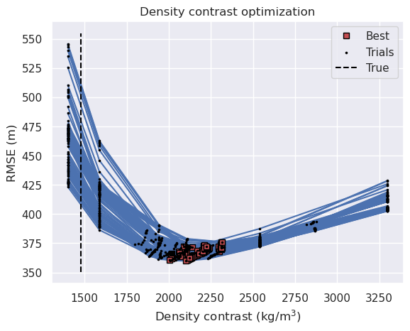
[21]:
fig = synth_plotting.plot_2var_ensemble(
sampled_params_df,
figsize=(6, 4),
x="grav_line_spacing",
y="grav_noise_levels",
x_title="Line spacing (km)",
y_title="Gravity noise (mGal)",
background="best_density_contrast",
background_title="Optimal density contrast",
# background_robust=True,
constrained_layout=False,
)
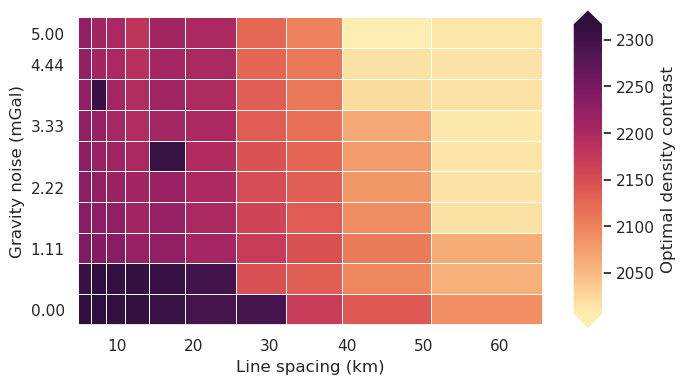
Redo with optimal density¶
[22]:
for i, row in sampled_params_df.iterrows():
# add results file name
sampled_params_df.loc[i, "final_inversion_fname"] = (
f"{ensemble_path}_final_inversion_{i}"
)
sampled_params_df.loc[i, "final_inverted_bathymetry_fname"] = (
f"{ensemble_path}_final_inverted_bathymetry_{i}.nc"
)
sampled_params_df.head()
[22]:
| grav_line_numbers | grav_noise_levels | grav_df_fname | grav_survey_df_fname | grav_line_spacing | grav_proximity | filter_width_trials_fname | best_filter_width | grav_data_loss_rmse | grav_data_loss_mae | results_fname | inverted_bathymetry_fname | best_density_contrast | constraints_rmse | inversion_rmse | final_inversion_fname | final_inverted_bathymetry_fname | |
|---|---|---|---|---|---|---|---|---|---|---|---|---|---|---|---|---|---|
| 0 | 3 | 0.00 | ../results/Ross_Sea/ensembles/Ross_Sea_ensembl... | ../results/Ross_Sea/ensembles/Ross_Sea_ensembl... | 58.333333 | 8.333333 | ../results/Ross_Sea/ensembles/Ross_Sea_ensembl... | 0.0 | 4.590279 | 2.771183 | ../results/Ross_Sea/ensembles/Ross_Sea_ensembl... | ../results/Ross_Sea/ensembles/Ross_Sea_ensembl... | 2088.0 | 372.495067 | 275.670090 | ../results/Ross_Sea/ensembles/Ross_Sea_ensembl... | ../results/Ross_Sea/ensembles/Ross_Sea_ensembl... |
| 1 | 3 | 0.56 | ../results/Ross_Sea/ensembles/Ross_Sea_ensembl... | ../results/Ross_Sea/ensembles/Ross_Sea_ensembl... | 58.333333 | 8.333333 | ../results/Ross_Sea/ensembles/Ross_Sea_ensembl... | 12000.0 | 4.602217 | 2.807339 | ../results/Ross_Sea/ensembles/Ross_Sea_ensembl... | ../results/Ross_Sea/ensembles/Ross_Sea_ensembl... | 2061.0 | 367.914802 | 272.583835 | ../results/Ross_Sea/ensembles/Ross_Sea_ensembl... | ../results/Ross_Sea/ensembles/Ross_Sea_ensembl... |
| 2 | 3 | 1.11 | ../results/Ross_Sea/ensembles/Ross_Sea_ensembl... | ../results/Ross_Sea/ensembles/Ross_Sea_ensembl... | 58.333333 | 8.333333 | ../results/Ross_Sea/ensembles/Ross_Sea_ensembl... | 20000.0 | 4.631439 | 2.867490 | ../results/Ross_Sea/ensembles/Ross_Sea_ensembl... | ../results/Ross_Sea/ensembles/Ross_Sea_ensembl... | 2063.0 | 366.931958 | 272.536995 | ../results/Ross_Sea/ensembles/Ross_Sea_ensembl... | ../results/Ross_Sea/ensembles/Ross_Sea_ensembl... |
| 3 | 3 | 1.67 | ../results/Ross_Sea/ensembles/Ross_Sea_ensembl... | ../results/Ross_Sea/ensembles/Ross_Sea_ensembl... | 58.333333 | 8.333333 | ../results/Ross_Sea/ensembles/Ross_Sea_ensembl... | 24000.0 | 4.635158 | 2.914395 | ../results/Ross_Sea/ensembles/Ross_Sea_ensembl... | ../results/Ross_Sea/ensembles/Ross_Sea_ensembl... | 2016.0 | 366.158762 | 271.493812 | ../results/Ross_Sea/ensembles/Ross_Sea_ensembl... | ../results/Ross_Sea/ensembles/Ross_Sea_ensembl... |
| 4 | 3 | 2.22 | ../results/Ross_Sea/ensembles/Ross_Sea_ensembl... | ../results/Ross_Sea/ensembles/Ross_Sea_ensembl... | 58.333333 | 8.333333 | ../results/Ross_Sea/ensembles/Ross_Sea_ensembl... | 28000.0 | 4.644990 | 2.967470 | ../results/Ross_Sea/ensembles/Ross_Sea_ensembl... | ../results/Ross_Sea/ensembles/Ross_Sea_ensembl... | 2014.0 | 365.509179 | 271.476837 | ../results/Ross_Sea/ensembles/Ross_Sea_ensembl... | ../results/Ross_Sea/ensembles/Ross_Sea_ensembl... |
[23]:
regional_grav_kwargs = dict(
method="constraints",
grid_method="pygmt",
constraints_df=constraint_points,
tension_factor=0,
)
[24]:
logging.getLogger().setLevel(logging.WARNING)
for i, row in tqdm(sampled_params_df.iterrows(), total=len(sampled_params_df)):
# load data
grav_df = pd.read_csv(row.grav_df_fname)
if row.grav_noise_levels == 0:
l2_norm_tolerance = 0.2**0.5
else:
l2_norm_tolerance = row.grav_noise_levels**0.5
# set kwargs to pass to the inversion
kwargs = {
# set stopping criteria
"max_iterations": 200,
"l2_norm_tolerance": l2_norm_tolerance, # square root of the gravity noise
"delta_l2_norm_tolerance": 1.008,
"solver_damping": 0.025,
}
# run the inversion workflow using the optimal damping and density values
_ = inversion.run_inversion_workflow(
grav_df=grav_df,
density_contrast=row.best_density_contrast,
zref=0,
starting_topography=starting_bathymetry,
regional_grav_kwargs=regional_grav_kwargs,
fname=row.final_inversion_fname,
create_starting_prisms=True,
calculate_starting_gravity=True,
calculate_regional_misfit=True,
**kwargs,
)
sampled_params_df.head()
[24]:
| grav_line_numbers | grav_noise_levels | grav_df_fname | grav_survey_df_fname | grav_line_spacing | grav_proximity | filter_width_trials_fname | best_filter_width | grav_data_loss_rmse | grav_data_loss_mae | results_fname | inverted_bathymetry_fname | best_density_contrast | constraints_rmse | inversion_rmse | final_inversion_fname | final_inverted_bathymetry_fname | |
|---|---|---|---|---|---|---|---|---|---|---|---|---|---|---|---|---|---|
| 0 | 3 | 0.00 | ../results/Ross_Sea/ensembles/Ross_Sea_ensembl... | ../results/Ross_Sea/ensembles/Ross_Sea_ensembl... | 58.333333 | 8.333333 | ../results/Ross_Sea/ensembles/Ross_Sea_ensembl... | 0.0 | 4.590279 | 2.771183 | ../results/Ross_Sea/ensembles/Ross_Sea_ensembl... | ../results/Ross_Sea/ensembles/Ross_Sea_ensembl... | 2088.0 | 372.495067 | 275.670090 | ../results/Ross_Sea/ensembles/Ross_Sea_ensembl... | ../results/Ross_Sea/ensembles/Ross_Sea_ensembl... |
| 1 | 3 | 0.56 | ../results/Ross_Sea/ensembles/Ross_Sea_ensembl... | ../results/Ross_Sea/ensembles/Ross_Sea_ensembl... | 58.333333 | 8.333333 | ../results/Ross_Sea/ensembles/Ross_Sea_ensembl... | 12000.0 | 4.602217 | 2.807339 | ../results/Ross_Sea/ensembles/Ross_Sea_ensembl... | ../results/Ross_Sea/ensembles/Ross_Sea_ensembl... | 2061.0 | 367.914802 | 272.583835 | ../results/Ross_Sea/ensembles/Ross_Sea_ensembl... | ../results/Ross_Sea/ensembles/Ross_Sea_ensembl... |
| 2 | 3 | 1.11 | ../results/Ross_Sea/ensembles/Ross_Sea_ensembl... | ../results/Ross_Sea/ensembles/Ross_Sea_ensembl... | 58.333333 | 8.333333 | ../results/Ross_Sea/ensembles/Ross_Sea_ensembl... | 20000.0 | 4.631439 | 2.867490 | ../results/Ross_Sea/ensembles/Ross_Sea_ensembl... | ../results/Ross_Sea/ensembles/Ross_Sea_ensembl... | 2063.0 | 366.931958 | 272.536995 | ../results/Ross_Sea/ensembles/Ross_Sea_ensembl... | ../results/Ross_Sea/ensembles/Ross_Sea_ensembl... |
| 3 | 3 | 1.67 | ../results/Ross_Sea/ensembles/Ross_Sea_ensembl... | ../results/Ross_Sea/ensembles/Ross_Sea_ensembl... | 58.333333 | 8.333333 | ../results/Ross_Sea/ensembles/Ross_Sea_ensembl... | 24000.0 | 4.635158 | 2.914395 | ../results/Ross_Sea/ensembles/Ross_Sea_ensembl... | ../results/Ross_Sea/ensembles/Ross_Sea_ensembl... | 2016.0 | 366.158762 | 271.493812 | ../results/Ross_Sea/ensembles/Ross_Sea_ensembl... | ../results/Ross_Sea/ensembles/Ross_Sea_ensembl... |
| 4 | 3 | 2.22 | ../results/Ross_Sea/ensembles/Ross_Sea_ensembl... | ../results/Ross_Sea/ensembles/Ross_Sea_ensembl... | 58.333333 | 8.333333 | ../results/Ross_Sea/ensembles/Ross_Sea_ensembl... | 28000.0 | 4.644990 | 2.967470 | ../results/Ross_Sea/ensembles/Ross_Sea_ensembl... | ../results/Ross_Sea/ensembles/Ross_Sea_ensembl... | 2014.0 | 365.509179 | 271.476837 | ../results/Ross_Sea/ensembles/Ross_Sea_ensembl... | ../results/Ross_Sea/ensembles/Ross_Sea_ensembl... |
[ ]:
for i, row in sampled_params_df.iterrows():
# load saved inversion results
with pathlib.Path(f"{row.final_inversion_fname}_results.pickle").open("rb") as f:
topo_results, grav_results, parameters, elapsed_time = pickle.load(f)
final_bathymetry = topo_results.set_index(["northing", "easting"]).to_xarray().topo
# sample the inverted topography at the constraint points
constraint_points = utils.sample_grids(
constraint_points,
final_bathymetry,
f"final_inverted_bathymetry_{i}",
coord_names=("easting", "northing"),
)
constraints_rmse = utils.rmse(
constraint_points.true_upward
- constraint_points[f"final_inverted_bathymetry_{i}"]
)
# clip to inversion region
final_bathymetry = final_bathymetry.sel(
easting=slice(inversion_region[0], inversion_region[1]),
northing=slice(inversion_region[2], inversion_region[3]),
)
inversion_rmse = utils.rmse(bathymetry - final_bathymetry)
# save final topography to file
final_bathymetry.to_netcdf(row.final_inverted_bathymetry_fname)
# add to dataframe
sampled_params_df.loc[i, "final_inversion_constraints_rmse"] = constraints_rmse
sampled_params_df.loc[i, "final_inversion_rmse"] = inversion_rmse
sampled_params_df["final_inversion_topo_improvement_rmse"] = (
starting_bathymetry_rmse - sampled_params_df.final_inversion_rmse
)
sampled_params_df.head()
| grav_line_numbers | grav_noise_levels | grav_df_fname | grav_survey_df_fname | grav_line_spacing | grav_proximity | filter_width_trials_fname | best_filter_width | grav_data_loss_rmse | grav_data_loss_mae | ... | best_density_contrast | constraints_rmse | inversion_rmse | final_inversion_fname | final_inverted_bathymetry_fname | final_inversion_constraints_rmse | final_inversion_rmse | flight_kms | flight_kms_per_10000sq_km | final_inversion_topo_improvement_rmse | |
|---|---|---|---|---|---|---|---|---|---|---|---|---|---|---|---|---|---|---|---|---|---|
| 0 | 3 | 0.00 | ../results/Ross_Sea/ensembles/Ross_Sea_ensembl... | ../results/Ross_Sea/ensembles/Ross_Sea_ensembl... | 58.333333 | 8.333333 | ../results/Ross_Sea/ensembles/Ross_Sea_ensembl... | 0.0 | 4.590279 | 2.771183 | ... | 2088.0 | 372.495067 | 275.670090 | ../results/Ross_Sea/ensembles/Ross_Sea_ensembl... | ../results/Ross_Sea/ensembles/Ross_Sea_ensembl... | 0.997802 | 29.007697 | 1050.0 | 350.0 | -3.030347 |
| 1 | 3 | 0.56 | ../results/Ross_Sea/ensembles/Ross_Sea_ensembl... | ../results/Ross_Sea/ensembles/Ross_Sea_ensembl... | 58.333333 | 8.333333 | ../results/Ross_Sea/ensembles/Ross_Sea_ensembl... | 12000.0 | 4.602217 | 2.807339 | ... | 2061.0 | 367.914802 | 272.583835 | ../results/Ross_Sea/ensembles/Ross_Sea_ensembl... | ../results/Ross_Sea/ensembles/Ross_Sea_ensembl... | 1.054782 | 29.316770 | 1050.0 | 350.0 | -3.339421 |
| 2 | 3 | 1.11 | ../results/Ross_Sea/ensembles/Ross_Sea_ensembl... | ../results/Ross_Sea/ensembles/Ross_Sea_ensembl... | 58.333333 | 8.333333 | ../results/Ross_Sea/ensembles/Ross_Sea_ensembl... | 20000.0 | 4.631439 | 2.867490 | ... | 2063.0 | 366.931958 | 272.536995 | ../results/Ross_Sea/ensembles/Ross_Sea_ensembl... | ../results/Ross_Sea/ensembles/Ross_Sea_ensembl... | 0.965541 | 29.443992 | 1050.0 | 350.0 | -3.466643 |
| 3 | 3 | 1.67 | ../results/Ross_Sea/ensembles/Ross_Sea_ensembl... | ../results/Ross_Sea/ensembles/Ross_Sea_ensembl... | 58.333333 | 8.333333 | ../results/Ross_Sea/ensembles/Ross_Sea_ensembl... | 24000.0 | 4.635158 | 2.914395 | ... | 2016.0 | 366.158762 | 271.493812 | ../results/Ross_Sea/ensembles/Ross_Sea_ensembl... | ../results/Ross_Sea/ensembles/Ross_Sea_ensembl... | 0.944625 | 29.767704 | 1050.0 | 350.0 | -3.790355 |
| 4 | 3 | 2.22 | ../results/Ross_Sea/ensembles/Ross_Sea_ensembl... | ../results/Ross_Sea/ensembles/Ross_Sea_ensembl... | 58.333333 | 8.333333 | ../results/Ross_Sea/ensembles/Ross_Sea_ensembl... | 28000.0 | 4.644990 | 2.967470 | ... | 2014.0 | 365.509179 | 271.476837 | ../results/Ross_Sea/ensembles/Ross_Sea_ensembl... | ../results/Ross_Sea/ensembles/Ross_Sea_ensembl... | 0.922626 | 29.910516 | 1050.0 | 350.0 | -3.933166 |
5 rows × 22 columns
[26]:
w = np.abs(inversion_region[1] - inversion_region[0]) / 1e3
h = np.abs(inversion_region[3] - inversion_region[2]) / 1e3
w, h
[26]:
(np.float64(150.0), np.float64(200.0))
[27]:
sampled_params_df["flight_kms"] = pd.Series()
for i, row in sampled_params_df.iterrows():
survey_df = pd.read_csv(row.grav_survey_df_fname)
# flight km is length of lines in km X number of lines
sampled_params_df.loc[i, "flight_kms"] = (
w * row.grav_line_numbers + h * row.grav_line_numbers
)
sampled_params_df.flight_kms.unique()
[27]:
array([np.float64(1050.0), np.float64(1400.0), np.float64(1750.0),
np.float64(2100.0), np.float64(2800.0), np.float64(3850.0),
np.float64(4900.0), np.float64(6300.0), np.float64(8050.0),
np.float64(10500.0)], dtype=object)
[28]:
inversion_area = (
(inversion_region[1] - inversion_region[0])
/ 1e3
* (inversion_region[3] - inversion_region[2])
/ 1e3
)
sampled_params_df["flight_kms_per_10000sq_km"] = (
(sampled_params_df.flight_kms / inversion_area) * 10e3
).astype(float)
sampled_params_df.flight_kms_per_10000sq_km.unique()
[28]:
array([ 350. , 466.66666667, 583.33333333, 700. ,
933.33333333, 1283.33333333, 1633.33333333, 2100. ,
2683.33333333, 3500. ])
[10]:
sampled_params_df.to_csv(ensemble_fname, index=False)
[8]:
sampled_params_df = pd.read_csv(ensemble_fname)
sampled_params_df.head()
[8]:
| grav_line_numbers | grav_noise_levels | grav_df_fname | grav_survey_df_fname | grav_line_spacing | grav_proximity | filter_width_trials_fname | best_filter_width | grav_data_loss_rmse | grav_data_loss_mae | ... | inverted_bathymetry_fname | best_density_contrast | constraints_rmse | inversion_rmse | final_inversion_fname | final_inverted_bathymetry_fname | final_inversion_constraints_rmse | final_inversion_rmse | flight_kms | flight_kms_per_10000sq_km | |
|---|---|---|---|---|---|---|---|---|---|---|---|---|---|---|---|---|---|---|---|---|---|
| 0 | 3 | 0.00 | ../results/Ross_Sea/ensembles/Ross_Sea_ensembl... | ../results/Ross_Sea/ensembles/Ross_Sea_ensembl... | 58.333333 | 8.333333 | ../results/Ross_Sea/ensembles/Ross_Sea_ensembl... | 0.0 | 4.590279 | 2.771183 | ... | ../results/Ross_Sea/ensembles/Ross_Sea_ensembl... | 2088.0 | 372.495067 | 275.670090 | ../results/Ross_Sea/ensembles/Ross_Sea_ensembl... | ../results/Ross_Sea/ensembles/Ross_Sea_ensembl... | 0.997802 | 29.007697 | 1050.0 | 350.0 |
| 1 | 3 | 0.56 | ../results/Ross_Sea/ensembles/Ross_Sea_ensembl... | ../results/Ross_Sea/ensembles/Ross_Sea_ensembl... | 58.333333 | 8.333333 | ../results/Ross_Sea/ensembles/Ross_Sea_ensembl... | 12000.0 | 4.602217 | 2.807339 | ... | ../results/Ross_Sea/ensembles/Ross_Sea_ensembl... | 2061.0 | 367.914802 | 272.583835 | ../results/Ross_Sea/ensembles/Ross_Sea_ensembl... | ../results/Ross_Sea/ensembles/Ross_Sea_ensembl... | 1.054782 | 29.316770 | 1050.0 | 350.0 |
| 2 | 3 | 1.11 | ../results/Ross_Sea/ensembles/Ross_Sea_ensembl... | ../results/Ross_Sea/ensembles/Ross_Sea_ensembl... | 58.333333 | 8.333333 | ../results/Ross_Sea/ensembles/Ross_Sea_ensembl... | 20000.0 | 4.631439 | 2.867490 | ... | ../results/Ross_Sea/ensembles/Ross_Sea_ensembl... | 2063.0 | 366.931958 | 272.536995 | ../results/Ross_Sea/ensembles/Ross_Sea_ensembl... | ../results/Ross_Sea/ensembles/Ross_Sea_ensembl... | 0.965541 | 29.443992 | 1050.0 | 350.0 |
| 3 | 3 | 1.67 | ../results/Ross_Sea/ensembles/Ross_Sea_ensembl... | ../results/Ross_Sea/ensembles/Ross_Sea_ensembl... | 58.333333 | 8.333333 | ../results/Ross_Sea/ensembles/Ross_Sea_ensembl... | 24000.0 | 4.635158 | 2.914395 | ... | ../results/Ross_Sea/ensembles/Ross_Sea_ensembl... | 2016.0 | 366.158762 | 271.493812 | ../results/Ross_Sea/ensembles/Ross_Sea_ensembl... | ../results/Ross_Sea/ensembles/Ross_Sea_ensembl... | 0.944625 | 29.767704 | 1050.0 | 350.0 |
| 4 | 3 | 2.22 | ../results/Ross_Sea/ensembles/Ross_Sea_ensembl... | ../results/Ross_Sea/ensembles/Ross_Sea_ensembl... | 58.333333 | 8.333333 | ../results/Ross_Sea/ensembles/Ross_Sea_ensembl... | 28000.0 | 4.644990 | 2.967470 | ... | ../results/Ross_Sea/ensembles/Ross_Sea_ensembl... | 2014.0 | 365.509179 | 271.476837 | ../results/Ross_Sea/ensembles/Ross_Sea_ensembl... | ../results/Ross_Sea/ensembles/Ross_Sea_ensembl... | 0.922626 | 29.910516 | 1050.0 | 350.0 |
5 rows × 21 columns
Examine results¶
[31]:
# subplots showing inverted bathymetry error
grids = []
cbar_labels = []
row_titles = []
column_titles = []
# iterate over the ensemble starting with high noise, low line numbers
# row per noise level and column per line spacing
for i, row in sampled_params_df.sort_values(
by=["grav_noise_levels", "grav_line_spacing"],
ascending=False,
).iterrows():
dif = bathymetry - xr.open_dataarray(row.final_inverted_bathymetry_fname)
# add to lists
grids.append(dif)
cbar_labels.append(f"RMSE: {round(utils.rmse(dif), 2)} (mGal)")
if i % num == 0:
column_titles.append(f"Spacing: {round(row.grav_line_spacing)} km")
if i < num:
row_titles.append(f"Noise: {round(row.grav_noise_levels, 1)} mGal")
fig = maps.subplots(
grids,
fig_height=8,
fig_title="Inverted bathymetry error",
fig_title_font="75p,Helvetica-Bold,black",
fig_title_y_offset="5c",
cbar_labels=cbar_labels,
cmap="balance+h0",
# hist=True,
cpt_lims=polar_utils.get_combined_min_max(
grids,
robust=True,
absolute=True,
),
cbar_font="18p,Helvetica,black",
row_titles=row_titles,
column_titles=column_titles,
row_titles_font="25p,Helvetica,black",
column_titles_font="25p,Helvetica,black",
yshift_amount=-1.2,
)
fig.show()

[32]:
fig = synth_plotting.plot_2var_ensemble(
sampled_params_df,
x="grav_line_spacing",
y="grav_noise_levels",
x_title="Line spacing (km)",
y_title="Gravity noise (mGal)",
background="final_inversion_rmse",
background_title="Bathymetry RMSE (m)",
background_robust=True,
plot_contours=[starting_bathymetry_rmse],
plot_title="with optimal density",
constrained_layout=False,
)
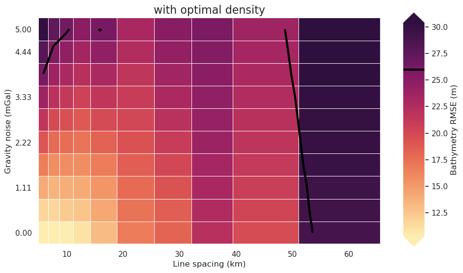
[33]:
_ = synth_plotting.plot_ensemble_as_lines(
sampled_params_df,
y="final_inversion_rmse",
x="grav_noise_levels",
groupby_col="grav_line_spacing",
x_label="Gravity noise (mGal)",
cbar_label="Line spacing (km)",
trend_line=True,
horizontal_line=starting_bathymetry_rmse,
horizontal_line_label="Starting RMSE",
horizontal_line_label_loc="lower right",
plot_title="Medium regional field",
)
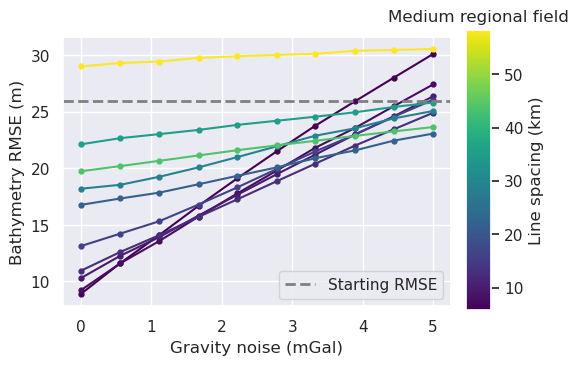
[34]:
_ = synth_plotting.plot_ensemble_as_lines(
sampled_params_df,
y="final_inversion_rmse",
x="grav_line_spacing",
groupby_col="grav_noise_levels",
x_label="Line spacing (km)",
cbar_label="Gravity noise (mGal)",
trend_line=True,
horizontal_line=starting_bathymetry_rmse,
horizontal_line_label="Starting RMSE",
horizontal_line_label_loc="lower right",
plot_title="Medium regional field",
)
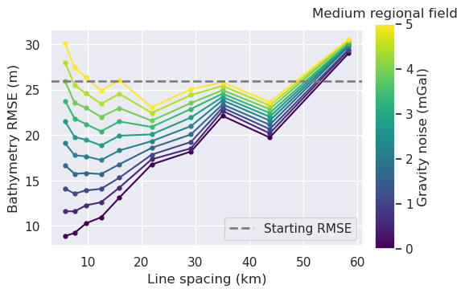